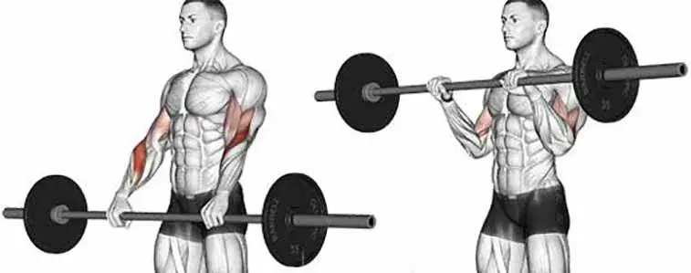
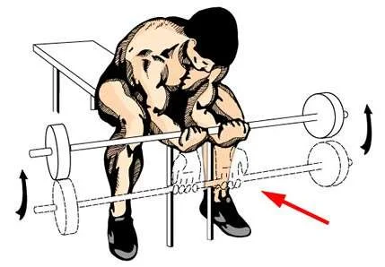
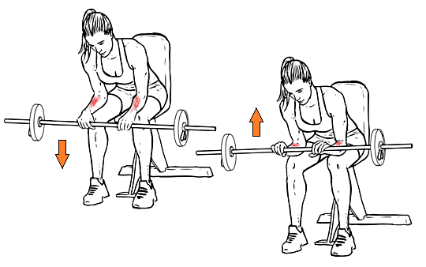

Exercícios para antebraço:
Rosca inversa com barra
Segure uma barra na posição pronada, ou seja, com as palmas das mãos viradas para trás (em direção ao seu tronco). Mantenha a posição ereta, com os braços esticados em frente ao corpo. Levante a carga, flexionando o cotovelo, até completar todo o arco do movimento (você deve sentir que seu antebraço toca o seu bíceps, ou pelo menos chega próximo de tocar). Retorne à posição inicial, estendendo os cotovelos de maneira controlada.
Rosca de punho
Para executar o exercício é necessario sentar em um banco e apoiar os antebraços nas pernas enquanto segura uma barra com as palmas para cima. Usando apenas as mãos e punhos, faça uma rosca com a barra movendo-a o mais alto possível em direção ao teto.
Rosca de punho inversa
Para executar o exercício é necessario sentar em um banco e apoiar os antebraços nas pernas enquanto segura uma barra com as palmas para baixo. Usando apenas as mãos e punhos, faça uma rosca inversa com a barra movendo-a o mais alto possível em direção ao teto.